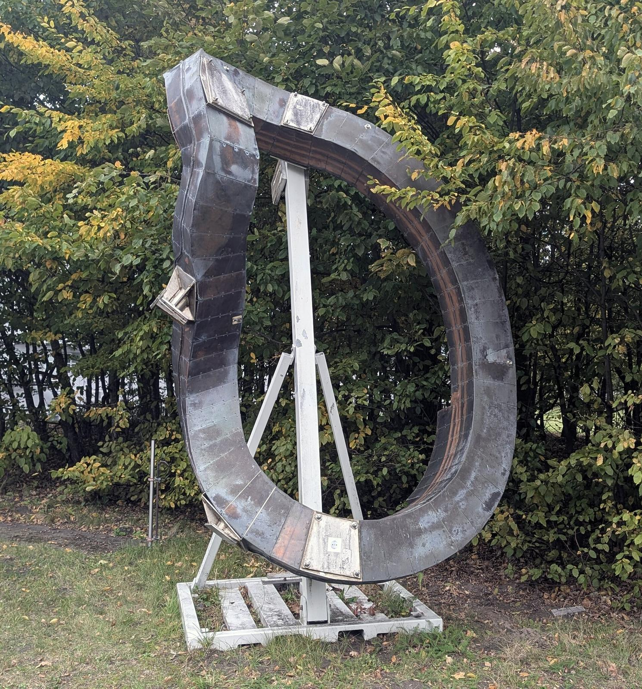
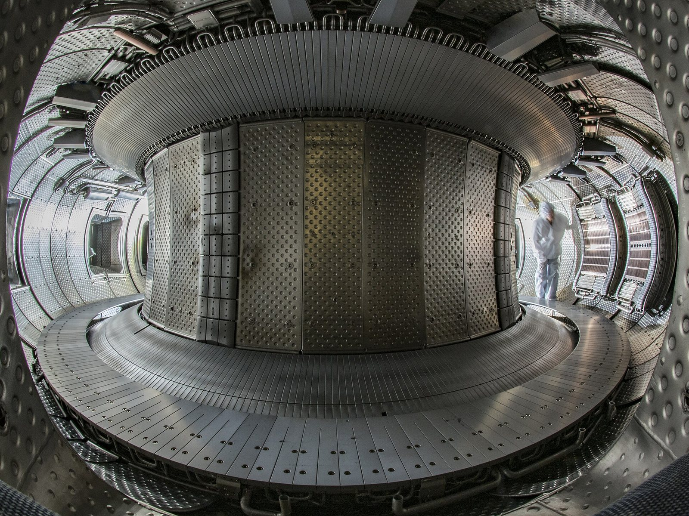

Tokamak or stellarator?
Why do the two leading designs for a magnetic fusion reactor look so different, although both hold the plasma in a ring?
Prior knowledge
- A charged particle circles around a magnetic field line, and a ring of field lines has no open endschapter Charged particles and magnetic confinement
- A changing current in one coil induces a current in another coil, as in a transformer (electromagnetism course)
Core path: follow the steps in order. Tasks marked Optional give extra practice. Optional tasks: 1.
Think about it
Two of the world's largest fusion experiments both hold their plasma in a ring. ITER in France has flat, D-shaped coils standing neatly around the ring. Wendelstein 7-X in Germany has coils bent into strange, twisted shapes, which took years to design with supercomputers and years more to build and place accurately.
If both machines hold a plasma in a ring, why would anyone build coils that are so hard to make?
Review: why a ring?
Predict
Make your predictions before investigating 2 questions
Prediction 1: a field along the ring
Prediction 2: pulses or steady?
Investigate
Investigation 1: two machines in 3D
Work in pairs. Look at both machines in the drawing. For each one, switch the layers on one by one: the coils, the toroidal field, the poloidal field, the helical field line and (in the tokamak) the plasma current. Step through all five cards. Write down, for each machine, what makes the poloidal field.
Word bank
toroidal (the long way round) · poloidal (the short way round) · helical · a coil · the plasma current · the central solenoid · to induce · to twist · a disruption · steady
Sentence starters
- In a tokamak, the poloidal field comes from …
- In a stellarator, the twist comes from …
- The tokamak risks disruptions because …
- The stellarator does not, because …
- So steady operation is easier for the …, because …
Discuss: two ways to twist
Discuss with your partner, then write three or four sentences.
How does each machine twist its field lines? Explain why the tokamak risks disruptions and the stellarator does not, and why that makes steady operation easier for one of them.
Model answer
In a tokamak, the poloidal field comes from a large current that flows round the ring in the plasma itself, induced by the central solenoid. In a stellarator, the twist comes from the coils, which are bent into three-dimensional shapes. The tokamak risks disruptions because its confinement depends on a huge current in the plasma: if the plasma becomes unstable, the current and the twist can collapse together within milliseconds. The stellarator does not, because its twist is made by the coils and stays there even if the plasma changes. So steady operation is easier for the stellarator, because no plasma current has to be driven, while a tokamak must keep driving its current without a changing transformer current.
Assess your own answer
Tick the points your own answer already contains.
Review the theory summary.
Investigation 2: long plasmas
Statistical data · Durations from CEA (WEST, 2025), Wikipedia articles on WEST (Tore Supra), Wendelstein 7-X and EAST, and the ITER Organization (planned pulse), read 2026-11-01. Rounded values.
| Year | Machine (country, design) | Duration (s) |
|---|---|---|
| 2003 | Tore Supra (FR, tokamak) | about $390$ |
| 2021 | EAST (CN, tokamak) | $1056$ |
| 2023 | Wendelstein 7-X (DE, stellarator) | about $480$ |
| 2025 | EAST (CN, tokamak) | $1066$ |
| 2025 | WEST (FR, tokamak) | $1337$ |
| plan | ITER (FR, tokamak) | $300$–$500$ |
WEST is Tore Supra rebuilt. ITER's planned pulse is inductive. All these machines have superconducting coils, which use little power and can stay on for a long time. The long tokamak plasmas were driven mainly without induction.
How many times longer was WEST's plasma of 2025 than the record of its predecessor Tore Supra in 2003?
Hint 1: a guiding question
Divide the newer duration by the older one.
Hint 2: what is the connection
$1337\ \text{s} : 390\ \text{s}$
Show the solution
Given
$t_\text{WEST} = 1337\ \text{s}$ (2025), $t_\text{TS} \approx 390\ \text{s}$ (2003)
Asked
the ratio $t_\text{WEST} : t_\text{TS}$
Principle
"How many times longer" is the ratio of the two durations.
Formula
$$k = \frac{t_\text{WEST}}{t_\text{TS}}$$
Unit conversions
None: both times are in seconds, and the units cancel.
Substitution
$$k = \frac{1337\ \text{s}}{390\ \text{s}} = 3.43$$
Answer
WEST's plasma lasted about $3.4$ times as long. The Tore Supra time is known only as "about six and a half minutes", so two significant figures are enough.
Reasonableness
$1337\ \text{s}$ is about 22 minutes and $390\ \text{s}$ about 6.5 minutes; $22 : 6.5$ is a little more than $3$. A power plant would have to run for hours or days, so even this record is a step on the way.
Theory summary
Twisting the field lines
Coils around a ring make a toroidal magnetic field, which runs the long way round the ring. On its own it cannot hold a plasma. The coils are closer together on the inside of the ring, so the field is stronger there, and the field lines are curved. As you saw in the chapter Charged particles and magnetic confinement, this makes ions and electrons drift apart, an electric field builds up, and the whole plasma drifts outward.
The cure is a poloidal field, which runs the short way round the plasma's cross-section. Together the two make helical field lines that wind around the ring like the stripes on a candy cane. A particle on such a line visits the inside and the outside, the top and the bottom, so the separated charges can flow back along the lines and the outward drift does not build up.
The toroidal field
Ampère's law gives the field of $N$ turns carrying a current $I$, at a distance $R$ from the central axis of the ring:
$$B = \frac{\mu_0 N I}{2 \pi R}$$
Here $\mu_0 = 4\pi \cdot 10^{-7}\ \text{T} \cdot \text{m/A}$. The field falls as $1/R$: it is stronger on the inner side of the plasma than on the outer side.
The tokamak: a current in the plasma
The tokamak was proposed by Igor Tamm and Andrei Sakharov in the Soviet Union in the early 1950s. A large plasma current $I_\text{p}$ flows round the ring in the plasma itself, and its magnetic field is the poloidal field. In ITER it will be $15\ \text{MA}$.
The current is driven like the current in a transformer: the central solenoid in the middle of the ring is the primary coil, and the plasma is a one-turn secondary coil. A changing current in the solenoid induces the plasma current, which also heats the plasma. The coils are flat and fairly simple, and tokamaks have reached the best plasma conditions so far. The risk is a disruption: the plasma suddenly loses its confinement, and its large current dies within milliseconds, putting large forces and heat loads on the vessel.
The stellarator: twisted coils
The stellarator was invented by Lyman Spitzer at Princeton in 1951. Its coils, bent into complicated three-dimensional shapes, make the whole twist. No large plasma current is needed, so there are no disruptions of the tokamak kind.
Early stellarators confined plasma worse than tokamaks. Modern ones are optimised: computers search for coil shapes that hold the plasma well. Wendelstein 7-X in Greifswald, Germany, has 50 non-planar and 20 planar superconducting coils. It made its first plasma in December 2015 and held a plasma for about eight minutes in February 2023. The price is the coils: they are very hard to design, build and place accurately.

Pulsed or steady?
A transformer works only while the current in its primary coil keeps changing, and that cannot go on for ever. So inductive current drive alone gives pulses: ITER's solenoid can drive $15\ \text{MA}$ for about $300$ to $500\ \text{s}$.
But a tokamak current can also be driven without induction:
- neutral beams: fast neutral atoms enter the plasma, become fast ions and carry current round the ring;
- radio-frequency waves, such as lower hybrid waves, push electrons along the field;
- the bootstrap current: the plasma's own pressure gradient drives part of the current.
On 12 February 2025 the French tokamak WEST held a plasma for $1337\ \text{s}$, about 22 minutes, with its current driven by lower hybrid waves. A stellarator needs no driven current, so it can run steadily by design.

Key idea
Both designs hold the plasma in twisted field lines. The tokamak twists them with a plasma current: simpler coils and the best results so far, but disruptions, and steady operation needs non-inductive current drive. The stellarator twists them with three-dimensional coils: steady operation without disruptions, but coils that are very hard to make.
Words of the lesson
Back to your predictions
Compare your two predictions with the theory. Then answer the opening question in one or two sentences: why did the builders of Wendelstein 7-X accept such difficult coils?
Would you change your prediction?
Apply
Worked example
Problem
ITER has 18 toroidal field coils. Each has 134 turns, and the current in them is $68\ \text{kA}$. Calculate the toroidal field at the centre line of the plasma, $R = 6.2\ \text{m}$ from the central axis.
Step 1/7
Given: $N = 18 \cdot 134 = 2412$ turns, $I = 68\ \text{kA}$, $R = 6.2\ \text{m}$, $\mu_0 = 4\pi \cdot 10^{-7}\ \text{T} \cdot \text{m/A}$. Asked: the field $B$.
Step 2/7
Principle: The toroidal field coils together act like one ring-shaped coil of $N$ turns. Ampère's law around a circle of radius $R$ inside the coils gives the field there. The field of the other coils and of the plasma current is much weaker in this direction, so we ignore it.
Step 3/7
Formula: $$B = \frac{\mu_0 N I}{2 \pi R}$$
Step 4/7
Unit conversions:
Step 5/7
Substitution: $$\begin{aligned} B &= \frac{4\pi \cdot 10^{-7}\ \text{T} \cdot \text{m/A}}{2\pi \cdot 6.2\ \text{m}} \\ &\quad \cdot 2412 \cdot 6.8 \cdot 10^{4}\ \text{A} \\ &= 5.29\ \text{T} \end{aligned}$$
Step 6/7
Answer: $B \approx 5.3\ \text{T}$, two significant figures as in the radius and the current.
Step 7/7
Reasonableness: ITER gives its toroidal field as $5.3\ \text{T}$, about $100\ 000$ times the Earth's magnetic field. The peak field in the coils themselves, $11.8\ \text{T}$, is higher, because the inner legs of the coils are close to the axis, where $R$ is small.
Apply: the field at the inner edge
The plasma in ITER reaches from $R = 4.2\ \text{m}$ to $R = 8.2\ \text{m}$ from the central axis. Use the data of the worked example ($18$ coils of $134$ turns, $I = 68\ \text{kA}$) to calculate the toroidal field at the inner edge of the plasma.
Hint 1: a guiding question
Use the same formula as in the worked example, with $R = 4.2\ \text{m}$.
Hint 2: what is the connection
$B = \mu_0 N I/(2\pi R)$ with $N = 2412$. A smaller $R$ gives a stronger field.
Show the solution
Given
$N = 18 \cdot 134 = 2412$, $I = 68\ \text{kA}$, $R = 4.2\ \text{m}$, $\mu_0 = 4\pi \cdot 10^{-7}\ \text{T} \cdot \text{m/A}$
Asked
the toroidal field $B$ at the inner edge of the plasma
Principle
Ampère's law around a circle of radius $R$ inside the toroidal field coils: the field falls as $1/R$.
Formula
$$B = \frac{\mu_0 N I}{2 \pi R}$$
Unit conversions
Substitution
$$\begin{aligned} B &= \frac{4\pi \cdot 10^{-7}\ \text{T} \cdot \text{m/A}}{2\pi \cdot 4.2\ \text{m}} \\ &\quad \cdot 2412 \cdot 6.8 \cdot 10^{4}\ \text{A} \\ &= 7.81\ \text{T} \end{aligned}$$
Answer
$B \approx 7.8\ \text{T}$
At the inner edge.
Reasonableness
The inner edge is closer to the axis than the centre line, so the field is stronger than $5.3\ \text{T}$: $5.29\ \text{T} \cdot 6.2 : 4.2 = 7.81\ \text{T}$. At the outer edge it is only $4.0\ \text{T}$. This difference across the plasma is what makes the particles drift.
Optional Find the error
Common misconception
"Every tokamak can only run in short pulses, because its current comes from a transformer." Inductive drive alone is limited in time, but neutral beams, radio-frequency waves and the bootstrap current can drive the current without induction. WEST held a plasma for over 22 minutes in this way. A second mistake: "A stellarator has no magnetic field inside the plasma made by currents." It has no large plasma current, but its twisted coils carry very large currents.
Check your understanding
1. Concept: the poloidal field
2. Calculation: field and radius
3. Compare the designs
Word bank
a result · a plan · an advantage · a drawback · steady · a disruption · a pulse · reliable
Sentence starters
- I think the … has the best chance, because …
- One advantage of the … is that …
- On the other hand, …
- So far, the … has shown …, but … is only a plan.
- To be sure, I would want to see …
4. Argue: which design?
The chapter asks: Which reactor design has the best chance of making fusion work? Choose the tokamak or the stellarator. Write four or five sentences: give your choice, one advantage, one drawback, and one measured result that supports it, with its year. Separate the result from what is only planned.
Model answer
I think the tokamak has the best chance, because tokamaks have reached the best plasma conditions so far and ITER is being built as a tokamak. One advantage of the tokamak is that its coils are flat and fairly simple. On the other hand, its large plasma current can collapse in a disruption, and steady operation needs non-inductive current drive. So far, the tokamak WEST has shown a plasma of $1337\ \text{s}$ in 2025, driven without induction, but ITER's long burning plasmas are only a plan for the 2030s. To be sure, I would want to see a tokamak run steadily without disruptions for hours.
Assess your own answer
Tick the points your own answer already contains.
Review the theory summary.
Summary
- A purely toroidal field cannot hold a plasma: in the curved field that is stronger on the inside, ions and electrons drift apart and the plasma drifts outward. The field lines must be twisted (toroidal + poloidal = helical).
- The toroidal field is $B = \mu_0 N I / (2\pi R)$, so it falls as $1/R$ across the plasma.
- Tokamak: the poloidal field comes from a large plasma current, driven inductively by the central solenoid (pulses) or non-inductively by beams, waves and the bootstrap current (long pulses, perhaps steady). Risk: disruptions.
- Stellarator: the twist comes from three-dimensional coils. Steady by design and without disruptions, but the coils are difficult. In 2025 Wendelstein 7-X set a record triple product for long plasmas.
Le coin français
The 22-minute record of 2025 was set in France, by the tokamak WEST at the CEA centre of Cadarache, a few kilometres from ITER. A coil is une bobine, and a machine that runs without stopping runs en continu. Listen, repeat, and then say the last sentence to your partner. In the hints, capitals show the stressed syllable, and õ, ã and ẽ are nasal vowels: the air goes through the nose and no n is heard.
Photographs and videos
- A non-planar coil of Wendelstein 7-X. Siarhei Besarab. source, CC BY-SA 4.0
- Inside the WEST tokamak. Christophe Roux / IRFM. source, CC BY 4.0